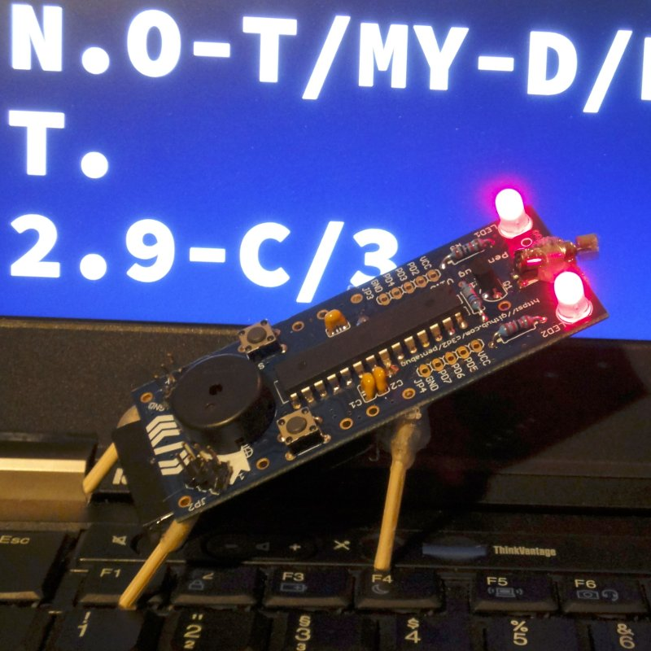

class: center, middle # Chaos macht Schule <img src="./images/cms.png"/> ## Henning Brinkmann, 29.10.2018 --- # Vorstellung: Chaos macht Schule - Kreaturen, die sich dem Chaos Computer Club nahe fühlen - Kreaturen, die ihr Wissen zu IT-Themen und Netzpolitik verbreiten wollen an - Schüler - Lehrer - Eltern - Webseite: https://www.ccc.de/schule - Mailinglisten: schule@lists.ccc.de, cms@hamburg.ccc.de - oder den lokalen Erfa (Erfahrungsaustauschkreis)/Chaos-Treff kontaktieren --- # Umfrage - Wer kennt schon Chaos macht Schule? - Wer hat schulpflichtige Kinder? - Wie kommen sie in Kontakt mit IT, Privatsphäre, Datenschutz? - Wie fit sind die Lehrer? - Wie wird der Umgang mit Internet und darauf basierenden Medien im Unterricht behandelt? - Wird das Internet im Unterricht benutzt? - Wie sind die Eltern eingebunden? --- # Wie bin ich dazu gekommen? - *C3 im CCH - Z9 besucht - Chaos macht Schule Vortrag auf dem Kongress - Mailingliste gefunden und Mitglied geworden --- # Veranstalungen 2017 - Meldorf (Juli): Was ist hacken? - Kisten gebaut - 34c3 - Lötwörkshop, Junghackertag --- # Veranstaltungen 2018 - Gymnasium Hochrad (Januar): Privatsphäre im Internet - Emilie-Wüstenfeld-Gymnasium: Daten im Netz - Meiendorf: Fachtag Digitalisierung - Keynote und Diskussion - Bundestreffen 2018/I Heidelberg (April) - Bundestreffen 2018/II Wien (Oktober) --- name: jht # Junghackertag --- template: jht - Lötworkshop - Bausätze - LED-Stern - Pentabug - Blinkenrocket - LED-Klammer - Calliope mini - Vortragsprogramm --- template: jht ## LED-Stern - Holzbrett - Reißzwecken - Color-Change LEDs - 9V Block --- template: jht ## Pentabug .right[  ] - https://github.com/c3d2/pentabug - PCB - Microcontroller - LEDs IR/Rot/Gelb - Photowiderstand - Vibrationsmotor - Piezo-Lautsprecher --- template: jht ## LED-Klammer - Wäscheklammer - LEDs in gebohrte Löcher - AAA Batterien --- template: jht ## Calliope mini .right[ ] - https://calliope.cc/ - Programmierung über Webseite mit Simulator - Blöcke zusammenstecken oder Javascript - makecode.calliope.cc - Download des Executables - per USB-Mass-Storage übertragen - Viele fertige Projekte --- # Mitmachen - Webseite/Mailingliste: https://cms.hamburg.ccc.de/ - Unterstützung ist gerne gesehen --- class: middle, center .huge[ Fragen? ]